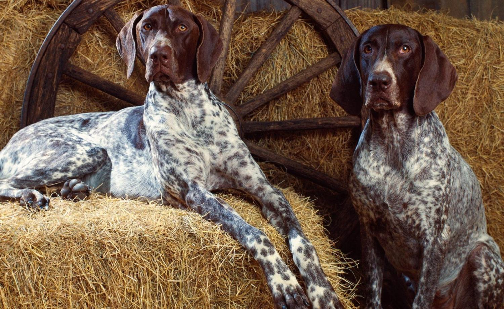
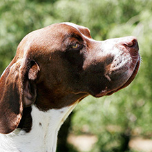
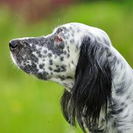
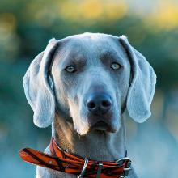

Легавые
Легавые породы собак прочно заняли свое место в сердцах охотников. Собаки специализируются на выслеживании пернатой дичи. Характерная особенность легавых – замирание в стойке при виде добычи. Ориентируясь по запаху, собака подходит к птице максимально близко. Остановившись, она замирает с приподнятой кверху лапой и ждет, когда охотник подстрелит дичь, чтобы потом принести хозяину добычу.
Содержание:
- Английский пойнтер
- Английский сеттер
- Веймаранер
Английский пойнтер
Другие названия: пойнтер
Английский пойнтер – представитель группы гладкошерстных легавых родом из Великобритании. Порода ценится за выдающееся чутье и контактность, позволяющую ее представителям ладить с семьей владельца и домашними животными.
Краткая информация
- Название породы: Английский пойнтер
- Страна происхождения: Великобритания
- Вес: 20-30 кг
- Рост (высота в холке): кобели 63-69 см, суки 61-66 см
- Продолжительность жизни: 12-13 лет
Основные моменты
- С английского название породы переводится как «стрелка», потому что в стойке пойнтер вытягивает тело, голову и хвост в единую горизонтальную линию, превращаясь в живой указатель.
- В отличие от других охотничьих собак, пойнтерам нравится контактировать не только с хозяином, но и с остальными домочадцами. По этой причине породу не рекомендуют отселять на постоянное место жительства в вольер или будку.
- Пойнтеры тяжело переносят разлуку с владельцем и одиночество в целом, так что отлучки хозяина не должны затягиваться на несколько дней.
Английский сеттер
Английский сеттер – дружелюбное и ласковое создание, чей характер сочетает детскую игривость и манеры аристократа. Ни то, ни другое не мешает животному быть великолепным охотником.
Краткая информация
- Название породы: Английский сеттер
- Страна происхождения: Великобритания
- Вес: кобели 25-36 кг, суки 20-32 кг
- Рост (высота в холке): кобели 65-68 см, суки 61-65 см
- Продолжительность жизни: 10-12 лет
Основные моменты
- Несмотря на развитые инстинкты, английские сеттеры не проявляют агрессию ни к незнакомым людям, ни к четвероногим собратьям.
- Представители породы не могут жить без активного участия в будничной суете хозяина. Эти животные – вовсе не одиночки, а весьма компанейские существа.
- Из «англичанина» сложно воспитать внимательного и ответственного сторожа: скорее, собака «зацелует» незнакомца, чем предостерегающе зарычит на него.
- Английский сеттер – идеальный вариант для семей с детьми: сложно найти хвостатую няньку лучше!
Веймаранер
Веймаранер – гончая, выделяющаяся аристократической красотой и атлетическим телосложением. Собака обладает универсальными охотничьими качествами и добрым нравом, снискавшим ей славу превосходного компаньона.
Краткая информация
- Название породы: Веймаранер
- Страна происхождения: Германия
- Вес: кобели 25-32 кг, суки 23-29 кг
- Рост (высота в холке): кобели 59-70 см, суки 57-65 см
- Продолжительность жизни: 10-13 лет
Основные моменты
- Веймаранеры выносливы, азартны, обладают великолепным чутьем. Собаки способны принимать деятельное участие во всех видах охоты.
- Наиболее солидные по размерам представители породы относятся к числу крупнейших среди европейских легавых.
- В ряду прочих европейских гончих они выделяются своим оригинальным серебристо-серым окрасом и своеобразным цветом глаз.
- Дружелюбные, оптимистичные, преданные, веймаранеры являются превосходными компаньонами.
- Достаточно темпераментны, но характер демонстрируют уравновешенный, стабильный.